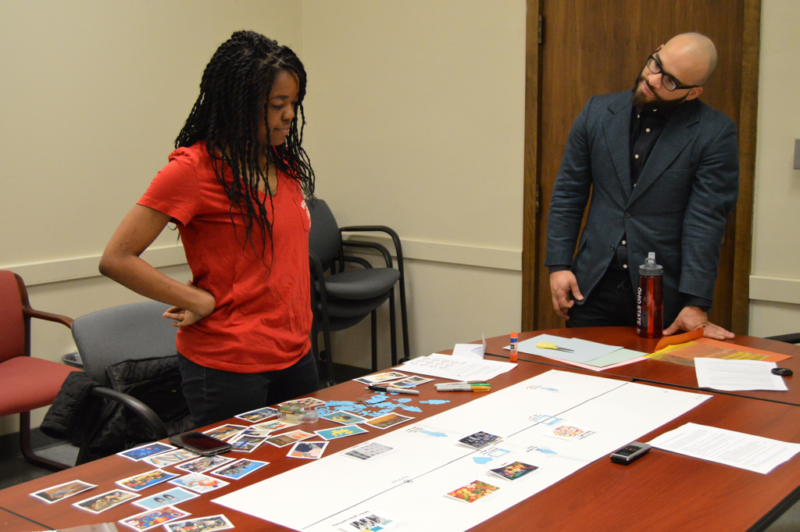
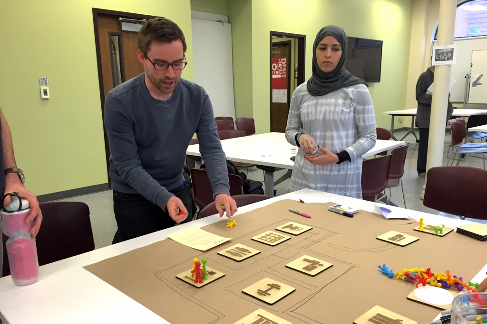
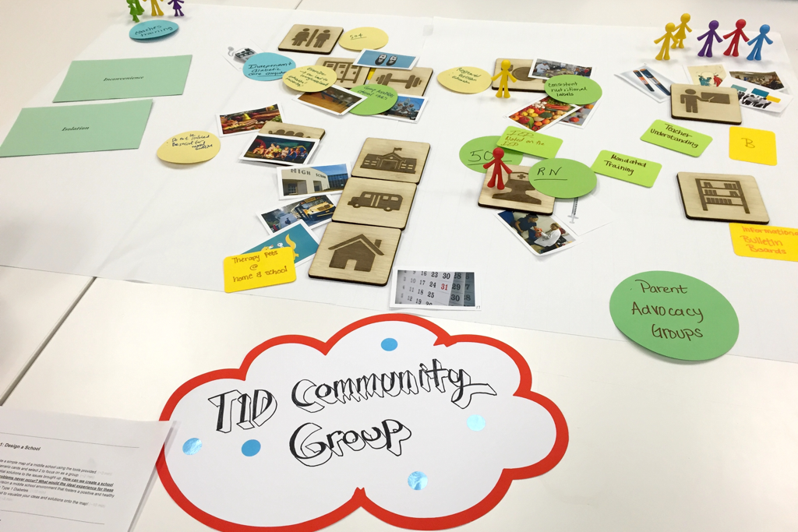
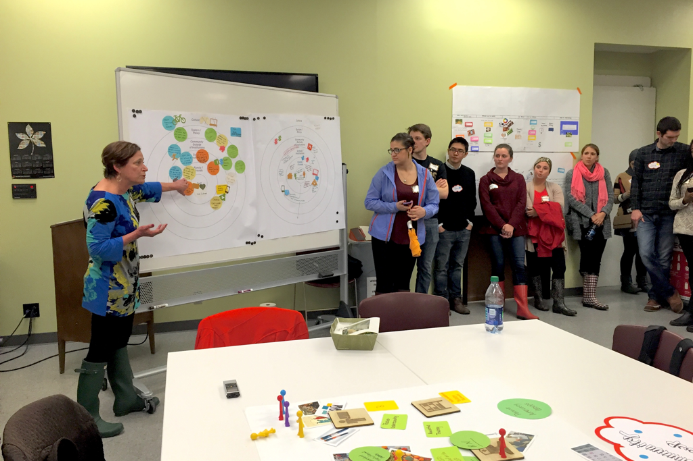

Co-participatory design to improve lives of Type 1 diabetes patients
Scope: Class Project in Design Studio with Elizabeth Sanders, PhD
Team: Abel Hernandez, Darwin Muljono, Caroline Win, Tally Wolff
My Role: Service Designer, Design Researcher, Facilitator
Timeline: Jan - May 2016
Type 1 Diabetes (T1D) is a chronic illness that accounts for between 5% and 10% of all diabetes cases. It is often first diagnosed in childhood, and about 80,000 children develop the disease each year.
How can we uitlize co-design to create concepts that will improve the lives of those living with T1D?
Our first step was to conduct interviews to better understand the values, goals, and pain points of our primary user group: academic researchers.
23 academic papers reviewed
7 experts consulted
4 patients with T1D interviewed
1 Diabetes School Navigator interviewed
1 expert interviewed
Several experts came to our class to provide education and insights about the challenges and frustrations of living with T1D and providing care to patients with T1D. We additionally read through 23 academic papers on Type 1 Diabetes to develop our knowledge on the topic.
As a class, we mapped out the primary stakeholders involved with Type 1 Diabetes, grouping them into the following:
Our team decided to focus on the school & work category, with the goal of designing a solution that can help schools and workplaces better support students and employees with Type 1 Diabetes.
In order to understand the connections, challenges, and successes between the different circles of care, we provided the pediatrician with a diagram to annotate.
A few team members attended a CDN meeting and conducted a mini workshop. Each CDN member was asked to come up with 3 or 4 ideas, themes, or challenges relating to T1D that they hoped we would be able to explore on this project. Below is a summary of key findings.
Type 1 diabetes never stops. 24/7 management is stressful and exhausting for patients.
We recruited 4 students from the CDN to interview to better understand their experiences and challenges. To facilitate the interview, we provided a paper timeline, cut-out icons, images, markers, and tape to allow participants to map out key positive and negative experiences in their life related to their diabetes.
To better understand the experience of living with T1D, our team spent a week using various devices that patients with diabetes use. I spent a week wearing a continuous glucose monitor (CGM) on my abdomen. I was able to experience first-hand the difficulty of counting carbs and insulin for every bit of food, pricking my finger several times a day, and enduring the irritation of the monitor on my skin 24/7. I can imagine that it must be very overwhelming especially when patients are first diagnosed as children.
We recruited 4 students from the CDN to interview to better understand their experiences and challenges. To facilitate the interview, we provided a paper timeline, cut-out icons, images, markers, and tape to allow participants to map out key positive and negative experiences in their life related to their diabetes.
We recruited 4 students from the CDN to interview to better understand their experiences and challenges. To facilitate the interview, we provided a paper timeline, cut-out icons, images, markers, and tape to allow participants to map out key positive and negative experiences in their life related to their diabetes.
We recruited 4 students from the CDN to interview to better understand their experiences and challenges. To facilitate the interview, we provided a paper timeline, cut-out icons, images, markers, and tape to allow participants to map out key positive and negative experiences in their life related to their diabetes.
We recruited 4 students from the CDN to interview to better understand their experiences and challenges. To facilitate the interview, we provided a paper timeline, cut-out icons, images, markers, and tape to allow participants to map out key positive and negative experiences in their life related to their diabetes.
We recruited 4 students from the CDN to interview to better understand their experiences and challenges. To facilitate the interview, we provided a paper timeline, cut-out icons, images, markers, and tape to allow participants to map out key positive and negative experiences in their life related to their diabetes.
We recruited 4 students from the CDN to interview to better understand their experiences and challenges. To facilitate the interview, we provided a paper timeline, cut-out icons, images, markers, and tape to allow participants to map out key positive and negative experiences in their life related to their diabetes.
We recruited 4 students from the CDN to interview to better understand their experiences and challenges. To facilitate the interview, we provided a paper timeline, cut-out icons, images, markers, and tape to allow participants to map out key positive and negative experiences in their life related to their diabetes.
 We recruited 4 students from the CDN to interview to better understand their experiences and challenges. To facilitate the interview, we provided a paper timeline, cut-out icons, images, markers, and tape to allow participants to map out key positive and negative experiences in their life related to their diabetes.
While our audience of college students seemed to connect with the tween’s point of view more, it would make for a more powerful pitch if we centered our story around the parent’s challenges as most investors would relate more to this age-group. Additionally, the primary pain points affect the parents, not the tweens.
In a future iteration, it would be best to focus on the parents as the primary user and further develop the user experience for the third user group: drivers.
Next Project →